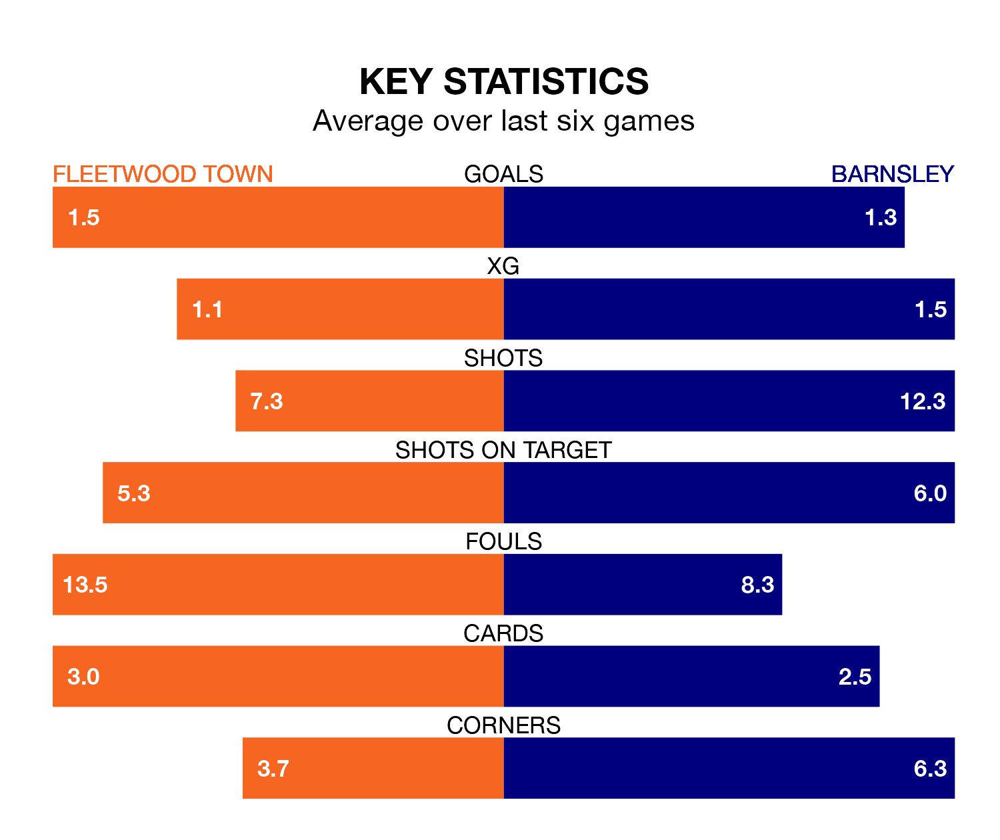

Relegation candidates Fleetwood Town face a challenge against high-flying Barnsley at the Highbury Stadium on Saturday.
Fleetwood Town are 23rd in the EFL League One table, and have picked up six wins and eight draws in their 32 games to date.
The Tykes, meanwhile, are fourth in the standings with 57 points, having won 16 and drawn nine of their first 31 matches, and are 12 points behind table-toppers Portsmouth.
With 56 goals in 31 games so far this season, Barnsley are the league's third-highest scorers with 1.8 goals per game. And they are conceding fewer than average, letting in 35 goals at a rate of 1.1 per game.
Fleetwood, meanwhile, are below average scorers, with 1.0 goal per game, compared to a league average of 1.3. They have conceded 1.7 goals per game.
In Devante Cole, the Tykes have the league's sharpest shooter so far this season. He has notched 17 goals in 31 appearances.
His goal rate of one every 152 minutes is quicker than that of Jayden Stockley, Town's top scorer with a goal every 257 minutes, and a total of six goals in 26 games.
In the last 10 years, Fleetwood and Barnsley have played each other on nine occasions. Fleetwood won two of them, Barnsley five, and they drew twice.
On average, the Cod Army scored 1.0 goal and the Tykes 1.7 in those matches.
Their last meeting was on October 28, when they played out a 2-2 draw.
The Cod Army are in mixed form in EFL League One, with two wins and two draws from their last six games.
With three wins and two draws over that period, the away side's form is better – they have taken 11 points from 18, compared to the hosts' eight.
Fleetwood's last match was on Tuesday, a 1-1 draw against Reading, with Brendan Sarpong Wiredu getting the goal for the Cod Army.
Barnsley drew 1-1 with Shrewsbury Town last time out, also on Tuesday, with Herbie Kane on the scoresheet.
Updated: 12:06 (UTC), 15/02/24